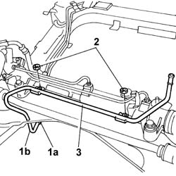
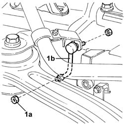
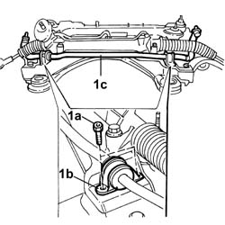
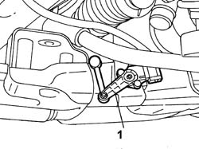

4410C10 front suspension stabilizer bar - r+r - check wheel geometry separately
- Path
- Procedures > 44 SUSPENSION AND WHEELS > 4410 FRONT SUSPENSION > 4410C ANTI-ROLL BAR AND MOUNTING STRUTS > 4410C10 front suspension stabilizer bar - r+r - check wheel geometry separately
- Kind
- repair procedure (removal / refitting; the operation number is the code)
- Applies to
- all engines; all production periods
- Interactive page
- https://sloeber94.github.io/elrnDB-lThss/en/#/78847
Applies to: all engines; all production periods
 Removing
Removing
 Refitting
Refitting- Position the vehicle on a lift with the wheels perfectly straight.
- Mark the position of the steering wheel in relation to the upper half-casing.
See in Op. 4410D10 Front suspension FRAME - R.R.
- Proceed with removing the front suspension frame without dismantling the chassis components at the bench; carry out the appropriate operation.
1. Working on the retaining band (1a), disconnect the Duplex flexible pipe (1b) from the rigid pipe.
2. Undo the fixing nuts.
3. Remove the rigid pipe from the heat exchanger to the reservoir.

Applies to: all engines; all production periods
1. Undo the nuts (1a) fixing the headlamp adjustment sensor rod (1b).

Applies to: all engines; all production periods
1. Undo the bolts (1a) fixing the mounting bracket (1b) and remove the anti-roll bar (1c) complete with joints.

Applies to: all engines; all production periods
Refitting
Removing- Fit the anti-roll bar complete with joints.
- Tighten the fixing bolts on the frame to torque.
 | Value - daNm | Fastening | Component | Ø |
|---|---|---|---|---|
. | (to crossmember) 3.5 | Bolt | FRONT ANTI-ROLL BAR | M8 |
- Tighten the bolts fixing the headlamp adjustment sensor rod to the anti-roll bar and to the sensor.
1. Check that the headlamp alignment adjustment sensor rod is fitted in the correct position.

Applies to: all engines; all production periods
- Fit the rigid pipe from the heat exchanger to the reservoir
- Tighten the nuts fixing the pipe to the power assisted steering box.
- Connect the flexible Duplex pipe to the rigid pipe.
See in Op. 4410D10 Front suspension FRAME - R.R.
- Proceed with refitting the front suspension frame; carry out the appropriate operation.